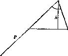
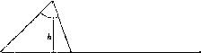

时，我们不仅应该提到其圆心和半径，而且还应该把这些几何元素在图中表示
出来。如果不把它们表示出来，我们就不能对定义有任何具体的应用；叙述定
义而不作图只不过是空口说白话罢了。
力图利用已知结果和回到定义去，是引入辅助元素的一些最好的理由；但
它们不是仅有的理由。为了使问题的概念更完整，更富于启发性，更为人所熟
悉，我们可以引入辅助元素，虽然目前我们几乎不知道我们怎样才能利用这些
所添加的元素。我们可能仅仅感觉到加上这样那样的元素用那种方式看问题是
个“好念头”。
引入辅助元素可以出自这种理由，也可以来自别的理由，但总得有些理由。
我们不能随随便便地引入辅助元素。
(3)例子。已知三角形一角和由此角顶点向对边所作的高和三角形的周长，
作这个三角形。
我们引入适当的记号。令已知角为a，从角a的顶点 A 向对边所作的高为h，
已知周长为P。我们画张图，在上面很容易标上a与h。我们是否已利用了所有的
数据?没有!我们的图并未包括等于三角形周长的已知长度P。因此，我们必须引
入P。但是怎样做呢?
我们可以用各种方式来试图引入P。图9，10所表示的方式看起来很笨拙。
如果我们自己琢磨一下为什么这两张图看来如此令人不称心，我们就可能看出
是由于缺乏对称性的缘故。
事实上，这个三角形有三条未知边：a，b，c。我们象通常所做的那样，
把 A 的对边叫做a，其余两边则相应地称为b与c。我们知道
a+b+c=P
这里，边b与边c的作用相同；它们是可交换的；我们的问题对于b和c是对称的。
但在图9和图10中，b和c的作用却不相同；放上长度P，我们对待b和c就不同了；
图9和图10破坏了问题对b和c的自然对称性。我们应该这样来放置P，使得它和b
和c的关系是对称的。
图9
图10